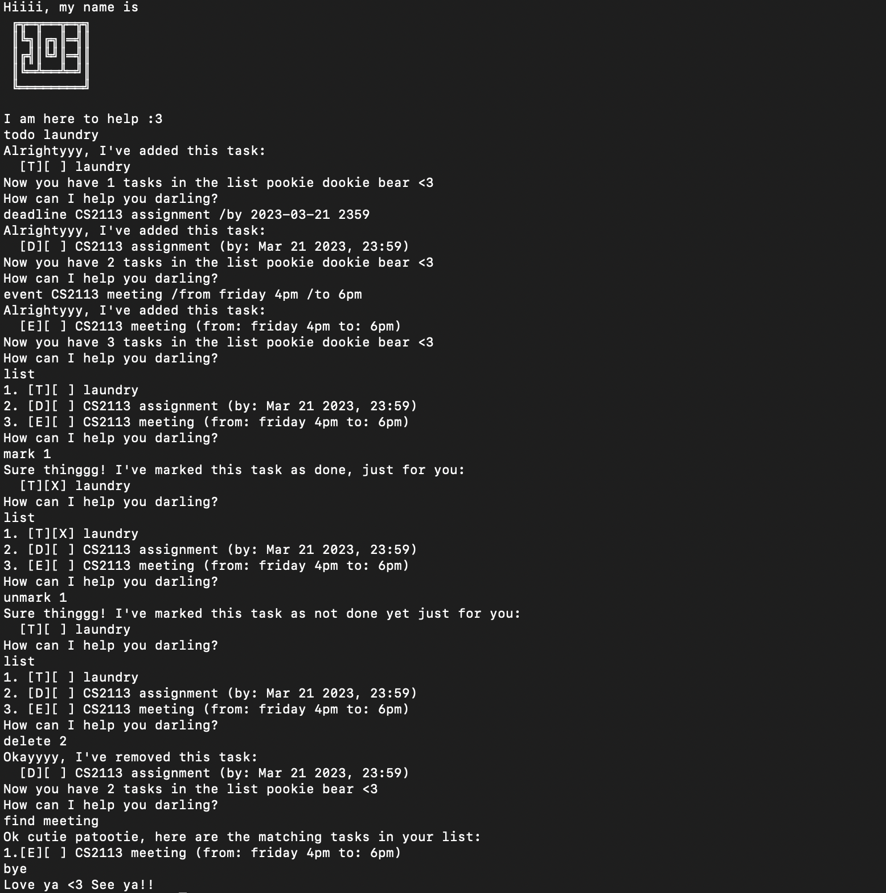
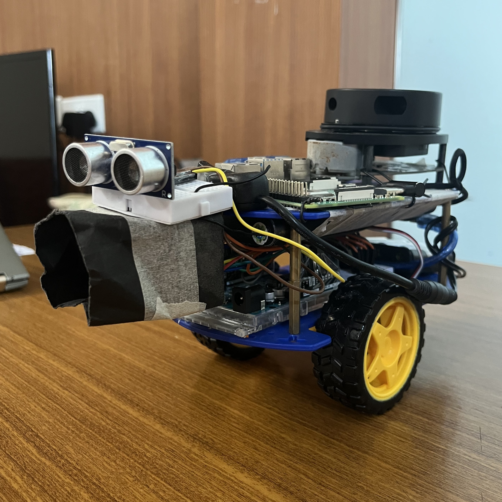
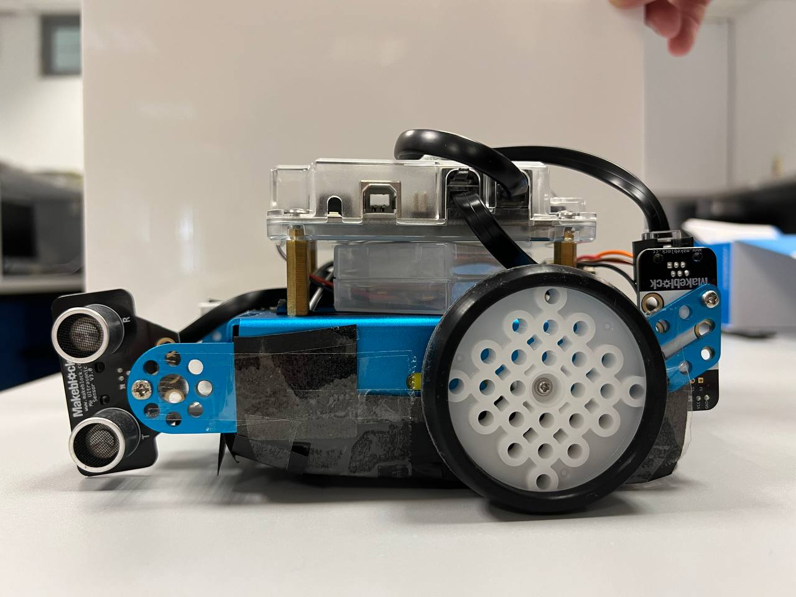

My Projects
Chatbot Joe
As a pivotal part of my Bachelor's in Computer Engineering, I developed "Joe" — a sophisticated command-line task management application. Built with Java 11, Joe assists users in effortlessly managing their daily tasks, deadlines, and events through an intuitive text-based interface.
 Learn MoreLIDAR Navigator Bot
As a pivotal part of my Bachelor's in Computer Engineering, I contributed to the LiDARNavigatorBot, also known as "Alex to the Rescue", a cutting-edge robotics project aimed at simulating search and rescue operations. This endeavor not only challenged our technical skills but also pushed the boundaries of practical application in robotics.
 Learn MoreMaze Runner Bot
As part of my Bachelor in Computer Engineering at the National University of Singapore, I contributed to the MazeRunnerBot project — a venture into robotics that combined sensor fusion, control systems, and programming to create an autonomous robot capable of navigating mazes.
 Learn More